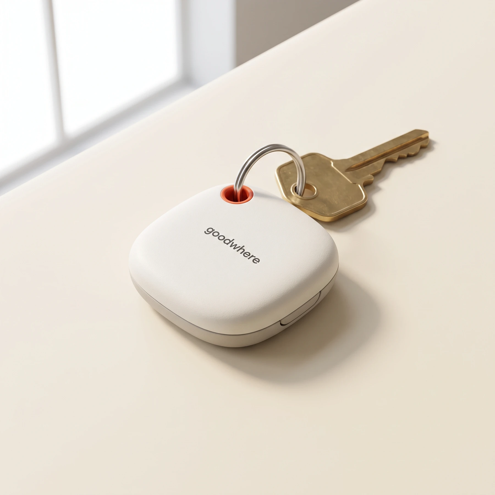
THE TINY FINDER
Dot
Bluetooth finderKeys, a backpack zipper or an everyday carry pouch.
DESIGN TARGET 32 × 28 × 8 mm
See who it’s for ↗Different things need
different kinds of care.
A tiny finder for the keys. A companion for the dog. A larger device for the trailer. Six proposed forms, built around the people who use them.
Meet the whole family ↓Original industrial-design concepts. The brand, dimensions and features are proposals, subject to clearance and engineering validation.
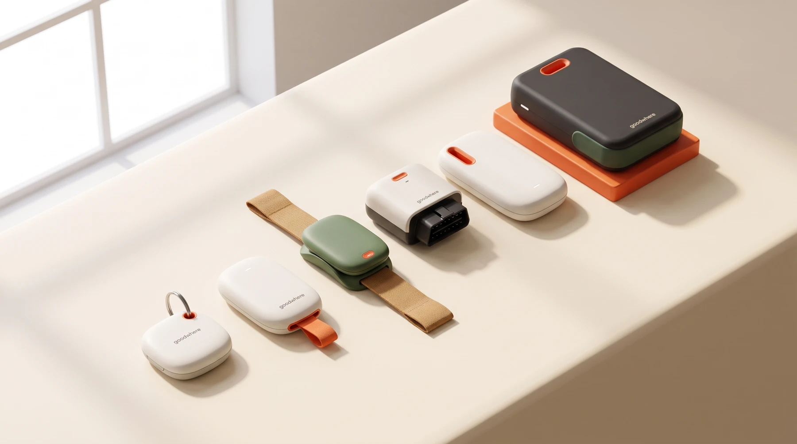
Keep the recognizable Goodwhere identity. Change the power source, attachment, reporting behavior and service around the job. This is a proposed product architecture, not six launch-ready SKUs.

Keys, a backpack zipper or an everyday carry pouch.
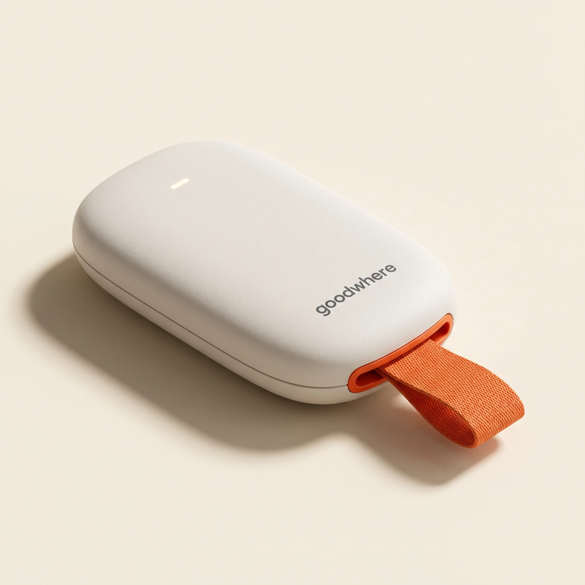
A work bag, camera bag or valuable carry gear.
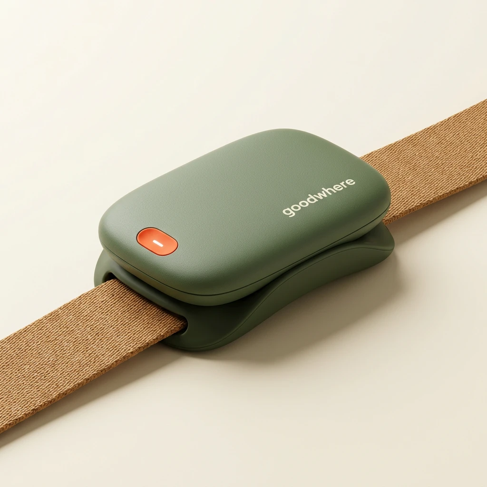
A secure, low-profile fit on a dog's collar.
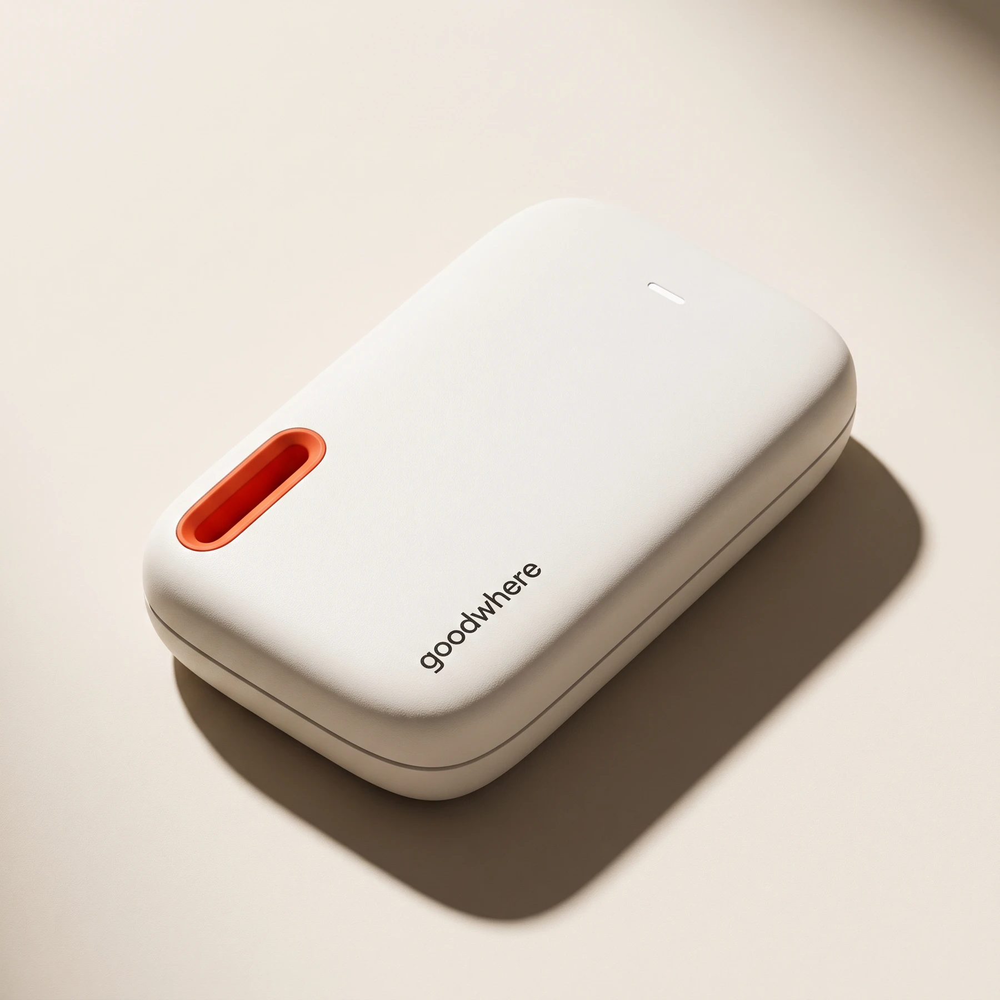
An owned vehicle, camper or valuable equipment.
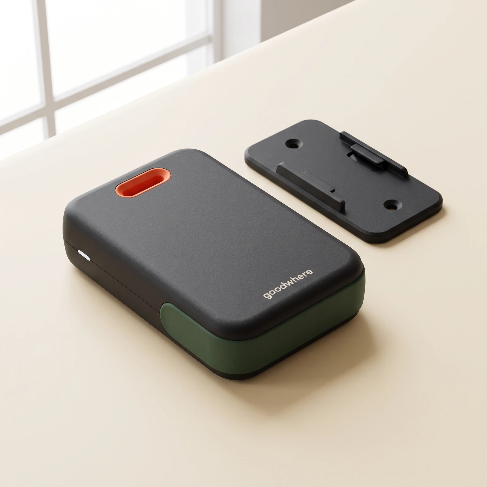
A stored camper, work trailer or equipment locker.
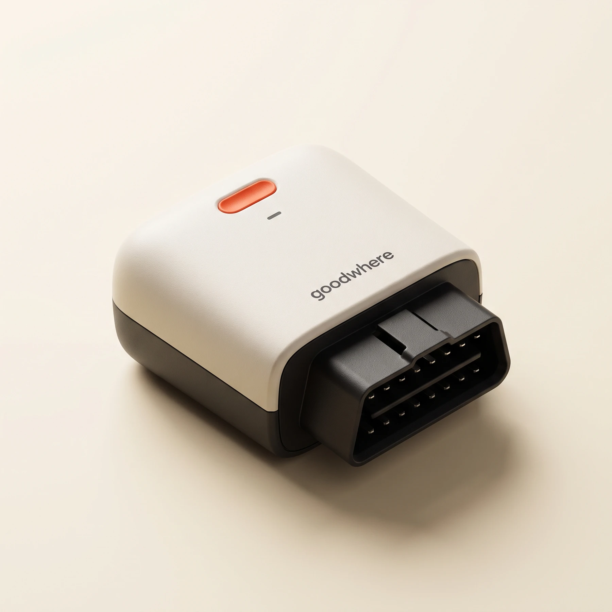
A compatible vehicle with an accessible OBD-II port.
All measurements are design targets, excluding detachable accessories unless noted. Renders are not dimensional drawings. Final size, weight, runtime, ingress ratings and connectivity need validation.
Choose a situation to see the proposed product, buyer profile, service and tradeoffs. Each form has a reason to exist.
For everything you'd go back for.
Proposed commercial modelConnect plan; existing $200 annual case is a hypothesis
Campaigns start with the person and their routine. The device changes with the story; the optimistic brand stays recognizable.
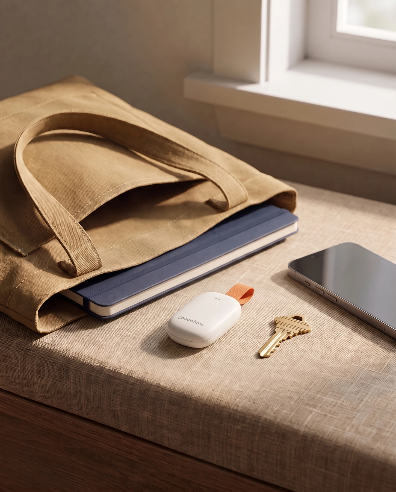
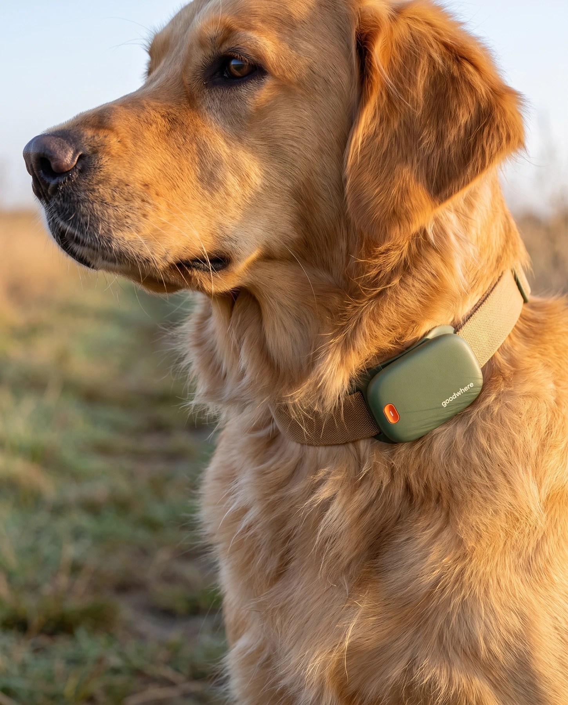
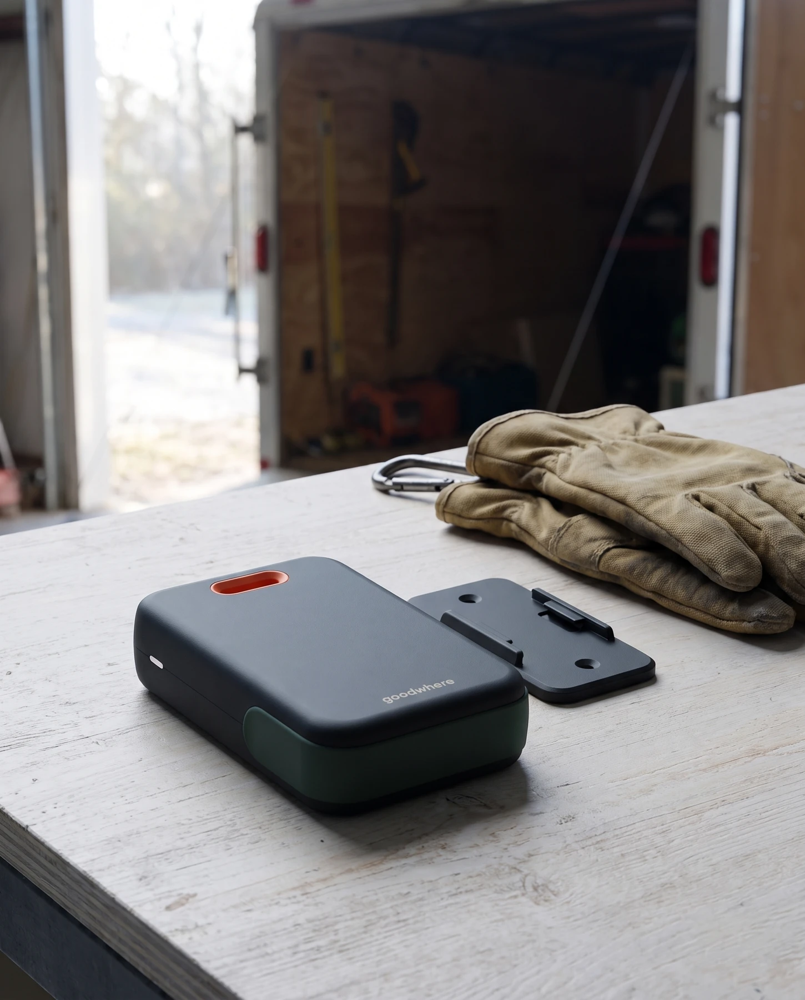
Battery volume, location method and attachment determine what a device can credibly promise. The shared brand should make those differences easy to understand.
| Product / target envelope | Buyer profile | Power and usage | Commercial role |
|---|---|---|---|
| Dot32 × 28 × 8 mm | Everyday households, students and forgetful commuters | Serviceable coin-cell concept. Low-power finding rather than frequent GPS reporting. | Purchase-led; no assumed $200 annual subscription |
| Pocket54 × 34 × 14 mm | Commuters, creators and frequent ground travellers | Compact rechargeable battery. Design for an easy, regular charging habit and selectable update modes. | Connect plan; price and reporting allowance to validate |
| Trail52 × 32 × 17 mm | Dog owners who walk, travel and spend time outdoors | Rechargeable with home power-saving modes as a design goal. Frequent location sessions shorten runtime. | Pet-focused Connect plan; validate willingness to pay |
| One76 × 46 × 19 mm | Cherished-car, camper and leisure-gear owners | A balanced rechargeable format. More battery volume than Pocket; charging cradle and removable mounts proposed. | Connect plan; existing $200 annual case is a hypothesis |
| Max108 × 68 × 30 mm | Trailer owners, tradespeople and equipment operators | Largest proposed battery envelope. Storage and active modes balance check-in frequency against runtime. | Asset Connect plan; cadence-sensitive economics |
| Drive48 × 42 × 25 mm + connector | Daily drivers, family-car owners and owner-operated couriers | Vehicle supply rather than a routine charging chore. Parked-current draw and low-voltage protection must be engineered. | Drive Connect plan; per active vehicle |
A tiny finder has a different architecture. Apple’s current AirTag specifications list Bluetooth, UWB and a replaceable coin cell. Goodwhere Dot is a separate proposed Bluetooth product; any third-party finding-network integration needs qualification. Architecture reference ↗
Runtime depends on behavior. Tractive documents higher energy use during frequent location reporting and in weak coverage. That supports separate compact, pet and larger-battery briefs; it does not establish Goodwhere runtime. Battery tradeoff reference ↗
Installed power changes the product. Bouncie describes OBD power while driving and a low-power parked mode. Drive would require its own compatibility, power-draw and parked-operation validation. Vehicle-power reference ↗
Proposed shared experience for the cellular range: one account, one place to see your objects, clear device health, invited access and use-case-specific controls.
Location and last-update status. Movement and boundary alerts. Battery or supply status. Route history where supported. Granular sharing and device access.
Pocket prioritizes portable carry. Trail prioritizes collar fit and finding sessions. Max prioritizes storage check-ins. Drive prioritizes vehicle-powered trips. Owners should understand what each mode changes.
A charging dock, replacement loop, tested collar saddle or secure mount can extend usefulness. Shared alerts and charging reminders can create service value before speculative AI add-ons.
Dot is the architectural exception: crowd-network variants may require their native platform app, and shared location access cannot be assumed. Do not promise six devices on one map before integrations are validated.
A connected work bag and a nearby key finder. One customer, two different jobs.
The camper and the dog. Separate attachments and permissions, one recognizable brand.
The powered van and the unpowered trailer. Match the power source to the asset.
Two related owned-asset use cases and two battery envelopes. Test cherished-vehicle and camper owners alongside equipment owners. Assess whether a qualified partner architecture can support both without duplicating the entire engineering program.
Miniaturization and wearable fit are separate development programs. Pocket must earn its charging routine; Trail must earn its comfort, retention and pet-specific service. Validate each with its own buyers.
Drive fits a partner-led vehicle program with compatibility support. Dot can be an accessible entry to the brand if margins, finding-network terms and differentiation work. These extensions do not need to launch together.
The brief is an original consumer object: our own form, materials, attachments, packaging and app experience. A qualified partner can supply the underlying technology. The brand should be visible in the product itself.
A pillowed rectangular body, a finely textured porcelain finish and one poppy-orange attachment aperture. Small enough to sit in your palm. Distinctive enough to build a brand around.
Dimensions are a design target. Battery, antenna layout, sealing and mounting will determine the final envelope. These are concept renders, not a working prototype.
On-demand location with coverage, battery and last-update status made clear.
Useful movement and safe-zone alerts, with thresholds the owner controls.
Route history and invited sharing for the things you own.
Proposed service features, subject to partner confirmation and testing. Cellular coverage and an active plan are required.
Loop is the recommendation: approachable, recognizable and flexible across car, outdoor and everyday ownership. Arc and Tab explore different personalities for the same opportunity.
Warm, confident, easy to recognize. The colored aperture becomes a repeatable physical signature.
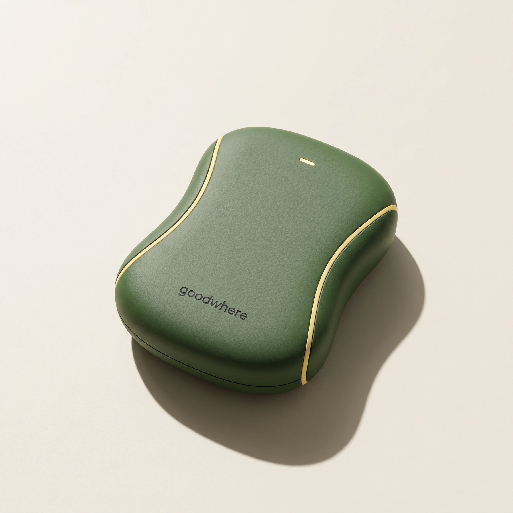
A sculpted outdoor object. Soft and calm; the more expressive body needs careful grip and molding studies.
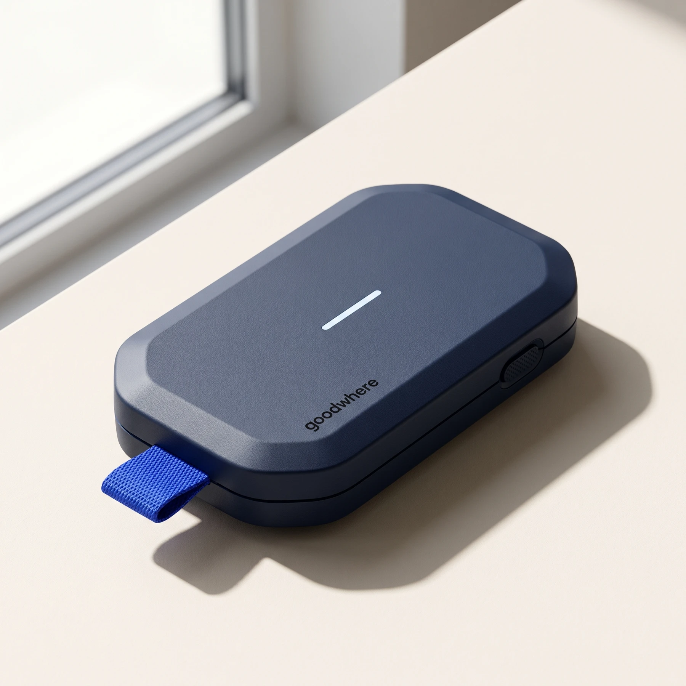
Compact equipment with a softer edge. The fabric tab adds utility and a more technical character.
“Good” brings the reassurance.
“Where” brings the category.
Together: permission to get on with life.
Working name, pronounced “good-where.” Preliminary exact-name web searches found no obvious consumer electronics collision in the returned results. Trademark, domain and handle clearance remain outstanding.
Launch with Porcelain + Poppy. Use Moss + Butter and Ink + Cobalt as controlled extensions after the first product proves demand. Fine texture, a precise seam and restrained light keep the device tactile and calm.
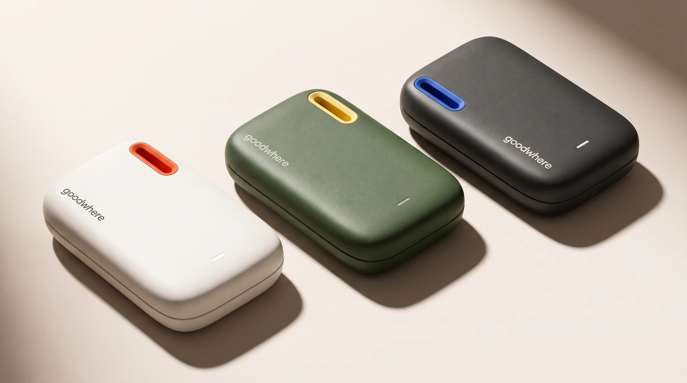
The design language continues through the carry loop, charging cradle, packaging and photography. Every view below develops the recommended Loop direction.
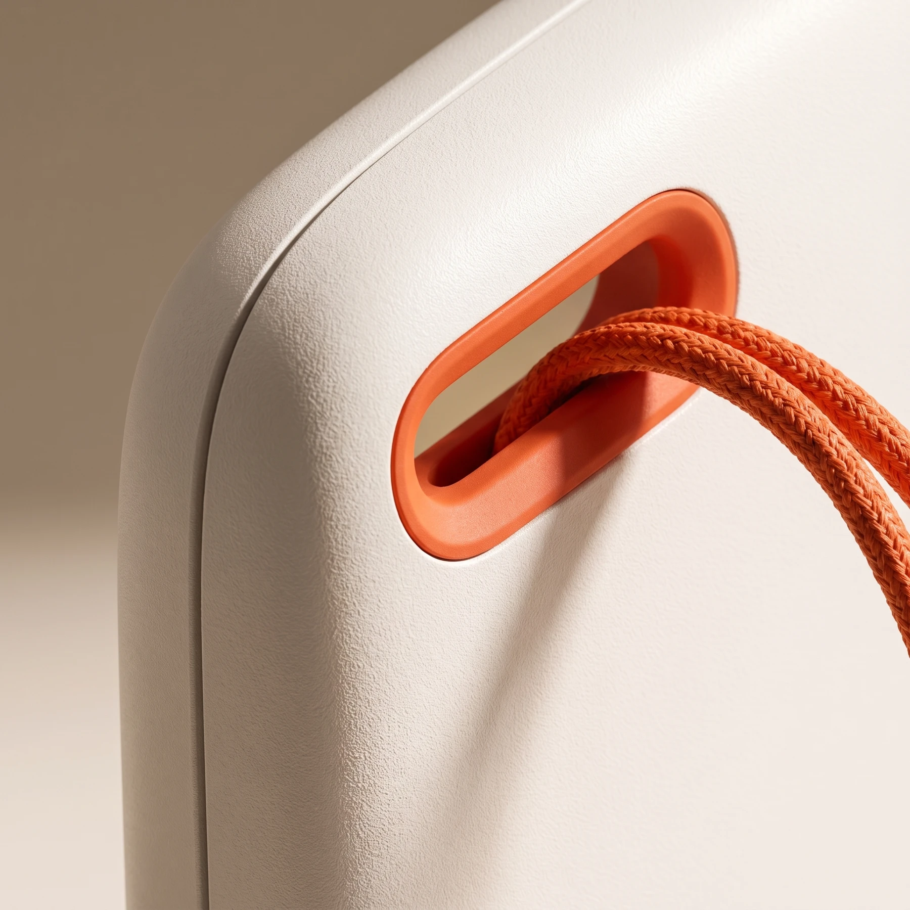
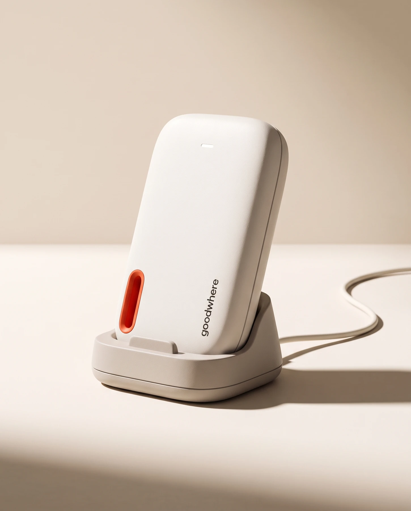
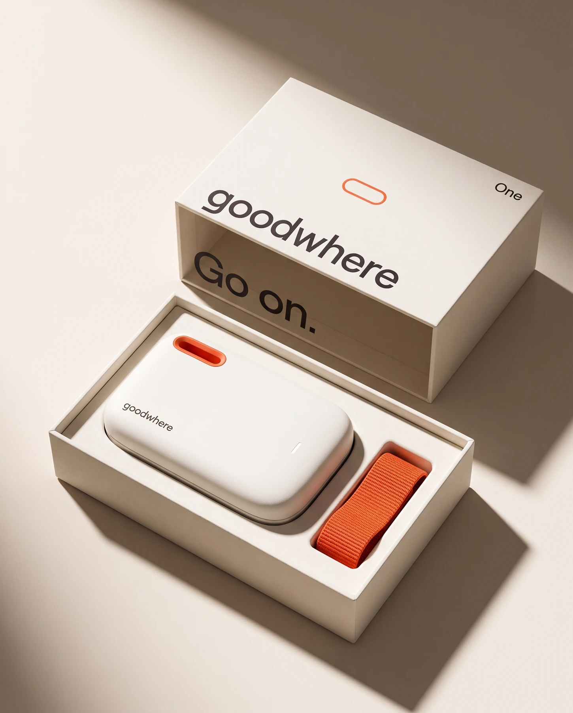
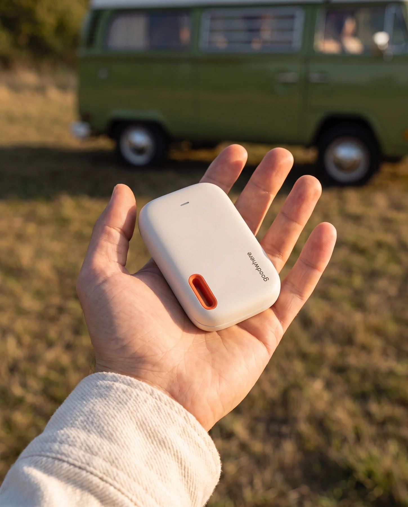
Use Locosafe / LocoNav diligence to determine which electronics, firmware and service components can support this product. Commission the industrial design and engineering around a proven architecture where possible.
The proposed smaller envelope cannot inherit Orb’s battery claims. Freeze the battery and antenna volume before committing to the shell. Validate real mounting positions, charging, temperature, ingress and reporting modes; assess certifications on the final design.
CAD, engineering prototypes, tooling and production validation come before launch. The 90-day program below is a commercial validation plan, not a commitment to ship new hardware in 90 days.
Download the product brief ↓Continue to the business case ↓There is a credible opportunity here. The strongest version starts with something people already love owning.
A camper. A cherished car. A work trailer. People can care deeply about an object without actively shopping for a tracker. An ad can connect the feeling to a practical action.
The C&B move is to make the category desirable, understandable and easy to enter. The operational job is harder: dependable location, useful alerts, painless activation and a subscription people continue to value.
Build the Goodwhere family, beginning with One and Max for owned vehicles and leisure assets. Match each form to a clear buyer and routine. Diligence Locosafe / LocoNav as a potential platform partner. Build the customer relationship, creative engine and service experience. Gate scale on paid activation and contribution. Read the partnership case ↓
Make a specific ownership moment recognizable before introducing a device.
Show cellular location, route history and boundary alerts in a concrete scenario.
Reduce uncertainty every week, with reliable service and restrained notifications.
The first market: people who would go back for their vehicle, camper or equipment.
Positioning territory: connected confidence.
Brand platform: “Go on.”
Supporting territory: “For everything you’d go back for.”
Pride, freedom and the things that make a life yours.
Demonstrate the alert, the route and the last successful update.
Show the full first-year price and renewal before checkout.
Owned assets, consensual sharing and location data kept private.
The concrete next step is to evaluate Locosafe / LocoNav as a hardware and software partner. A proposed C&B collaboration, subject to diligence and commercial agreement.
Locosafe’s website displays an Orb device plus one year for $159.99, and two years for $299.99. It also lists a $35 device and $19.99 monthly service. This is a published offer, not a verified checkout or sales record. [18]
The site attributes 750K+ tracked vehicles to the LocoNav platform. That does not establish Orb deployments or consumer retention. Its two-year battery claim applies to low-power use; it estimates over two weeks at ten-second reporting. These are manufacturer claims. [18]
The page’s FAQ says $14.17/month on an annual plan and a $25 monthly-plan start, while its purchase selector shows different totals. Reconcile the pricing, renewal and checkout before acquisition testing. [18]
Own one audience and one emotional promise. Turn real owner situations into Meta creative, a comprehensible offer, an easy setup journey and ongoing service communication.
Supply the exact hardware, firmware, connectivity, telemetry and app access required for the agreed experience. Establish update cadence, outage handling, warranty responsibilities and support escalation.
Compare a wholesale license, revenue share and joint venture. Price the same cohort under each. Define brand rights, billing, customer access, renewal participation, data portability and what happens if the partnership ends.
Installed base: monthly active and paying devices by hardware model, country, customer and cohort; reconcile cumulative deployments with currently connected units. Platform scale must be separated from consumer-product proof.
Reliability: twelve months of uptime, update latency, failed pings, battery results by reporting mode, returns, replacements and support tickets. Run the proposed 20-device field test against the exact launch firmware and carrier configuration.
Economics: landed device cost, fulfillment, connectivity, hosting, mapping, messaging, support and warranty cost per active device; proposed partner fees, minimum commitments and price-change terms.
Revenue quality: activation, cancellations, involuntary churn, refunds and annual renewals by cohort. Obtain the company’s P&L, balance sheet and cash flow, plus deferred subscription obligations and inventory funding needs. No Locosafe company financials have been supplied.
Control: identify the contracting entity, platform and hardware IP owners, market-specific certifications, customer-data responsibilities and a workable migration/continuity plan.
Revenue, recurring run rate, adjusted EBITDA, net income and free cash flow answer different questions. These comparables support category plausibility; they do not establish this venture’s lifetime value.
| Comparable / period | Verified scale | Profit and cash evidence | What to take from it |
|---|---|---|---|
| Life360FY 2025 actual | $489.5M revenue $369.3M subscription revenue | $93.2M adjusted EBITDA, about 19% margin; $88.6M operating cash flow. $150.8M net income includes a $118.4M one-time non-cash tax benefit. The company reports $32.5M net income excluding that benefit. | A scaled safety membership can produce cash. The headline net-income figure overstates ordinary-year earnings; operating cash flow is not FCF. [14] |
| Life360Q2 2026 actual / FY26 outlook | $159.0M quarterly revenue 3.2M paying circles | $31.1M adjusted EBITDA; $5.1M net income; $23.8M operating cash flow. FY26 revenue guidance: $650M–$685M, not realized revenue. | Its family-app, freemium and advertising mix differs from selling a standalone cellular tracker. Copy the service value, not its company-wide margins. [15] |
| TractiveMay 2026 transaction | Acquired by Bending Spoons $759M enterprise value | Acquisition closed May 18, 2026. The buyer describes a business monetized primarily through subscriptions. The quoted “140M revenue / 25M FCF” pair remains unverified; its currency and reporting period were not specified. | Concrete evidence of strategic value in dedicated pet tracking. Enterprise value is not revenue or cash flow, and one deal does not set our valuation. [16] [17] |
| Proposed C&B partnershipPre-diligence | No verified revenue, subscribers or retention supplied | The models below are scenarios, not Locosafe accounts or an investment valuation. | Safety may support high LTV when the service keeps earning its place. Measure renewal, contribution and cost to serve; the category label alone proves none of them. |
Primary product sources, a live Meta Ad Library check, and the four supplied Amazon screenshots. Observed September 16, 2026, Pacific time.
Spytec GPS showed approximately 7 active US ad results. Creative included fleet economics and a stolen-trailer story. LandAirSea Systems returned no active US ads under the same filters. This is a point-in-time page check; ad presence does not show spend or profitability.
Exact advertiser audit ↗A distinctive brand, useful service and a broader ownership story may reach less active shoppers. The audit does not establish a vacant market. This is the commercial hypothesis to test.
How we validate it ↓The four screenshots show $14.90–$26.95 hardware and displayed monthly purchase badges totaling 11K+. Those are rounded listing signals, not audited sales or paid subscriptions. Today’s site prices differ.
Compare products ↓Connectivity, support, payments, hosting, replacements and refunds consume the subscription. Activation, retention and true service costs are unknown for this proposed business.
Stress-test the economics ↓| Product | Device benchmark | Service / operating reality | Implication for C&B |
|---|---|---|---|
| Tracki UniversalCompact portable tracker | $14.99 on site $14.90 in supplied screenshot | Cellular plan required. Brand lists several monthly-equivalent rates depending on package. Battery claims vary with usage and accessory. | Price and basic functionality are easy to compare. Win on a clear use case and ownership experience. [1] |
| Tracki ProLonger-battery portable | $28.99 on site $23.99 in screenshot | 10,000 mAh; advertised 2–12 months depending on mode and network. Reporting interval depends on plan. | A better reference architecture for stored leisure assets; prove battery life at the promised cadence. [2] |
| Optimus 3.0 bundleTracker + magnetic case | $27.95 on site $26.95 in screenshot | $19.95/month; 20% annual-plan discount implies $191.52/year. US cellular coverage; current page says up to one month in standby. | Simple plans and useful alerts already exist. Annual price math is derived, not a checkout quote. [3] |
| LandAirSea 54Magnetic, rechargeable | $29.95 on site $14.95 in screenshot | $179.55/year at 3-minute updates; $224.55 at 1-minute. Historical playback and geofences. Battery claim: 1–3 weeks at active intervals. | Speed, price and battery are a three-way tradeoff. Avoid presenting maximum standby life as live-tracking life. [4] |
| Spytec / HapnAdjacent fleet competitor | Hardware included | OBD annual plan $107.40/year; wired $155.40/year. Fleet functionality and active Meta acquisition. | $200 is not an automatic pricing advantage. Avoid starting with undifferentiated fleet telematics. [5] |
| Apple AirTag (2026)Item finder | $29 single / $99 four-pack | Find My network, improved finding range and speaker; no cellular service subscription. User-replaceable coin cell. | Excellent for many belongings. The upgrade must solve a task worth recurring payment. [6] |
Battery and product-page claims are manufacturer statements, not independent lab tests. Tracki’s pages contain inconsistent battery/spec details; do not transplant them into launch claims. Screenshots and current websites also use different offers.
Sell the job a cellular tracker does well: location updates from the device, a route record and configured boundary alerts.
AirTag uses nearby participating devices to relay location through Find My. Cellular GPS uses satellite positioning and a mobile network to send updates. It still needs coverage, usable signal and power. Neither is a guarantee of recovery.
AirTag location is private. Its unwanted-tracking alerts are a safety feature; they do not make everyone’s location visible to any iPhone. Build the argument around owned-asset utility. [7]
Low cost, convenient nearby finding and a broad finding network. AirTag also supports left-behind notifications, so “AirTag has no alerts” is an inaccurate comparison. [8]
A camper leaves storage. Equipment arrives at a job. A car moves outside a chosen window. Prove the specific update cadence, alert delay and battery behavior before claiming the benefit.
An item finder helps you find it.
Connected GPS helps you follow the journey.
Follow with an actual side-by-side field demonstration. Avoid absolute range, instant-alert or invisible-tracking claims.
Attract people with an object they value. Keep them with service they use. Segment rankings below are strategic judgments, not measured conversion forecasts.
Lead segment. Clear emotional stake, visible creative stories and a reason to check an asset while away. Start with portable hardware suitable for the actual mounting and charging routine.
Second test. Practical asset value and possible multi-device demand. Competition is stronger; win a narrow use case before building fleet-management breadth.
Expansion. More devices and simpler shared visibility may matter, but phone location-sharing and inexpensive tags are strong substitutes. Test willingness to pay.
Later, with dedicated products. Pet incumbents already combine location with health features. Flight rules, animal fit and high-stakes care needs require separate product work. Generic hardware is not a universal answer. [9]
US RV-owning households in RVIA’s 2025 study. Median owner age: 49. This is an audience denominator, not validated demand for our product. [10]
| Illustrative paid adoption | Paid devices* | Annual revenue at $200 |
|---|---|---|
| 0.1% | 8,100 | $1.62M |
| 0.5% | 40,500 | $8.10M |
| 1.0% | 81,000 | $16.20M |
*One paid device per adopting household. Scenario math, not a forecast. No additional vehicle or household categories are added, avoiding overlap. RVIA changed survey methodology in 2025; the ownership figure is not a like-for-like trend against 2021.
Why calm confidence beats panic: In the adjacent powersports market, NICB reports a 20% decline in 2025 thefts of motorcycles, ATVs, snowmobiles and watercraft; 63% remained unrecovered. This is not motorhome or camper theft data. The problem persists, but an “exploding theft epidemic” story would misstate this evidence. [11]
Adjust the model for one subscription-eligible cellular cohort at a time. Every input is illustrative. Exclude Dot from paid-cellular units; the $200 input is not a universal family-wide ARPU. There are no supplied activation cohorts, retention data, vendor quotes or verified gross margins for this venture.
8,500 paid subscriptions from this cohort
Paid devices = shipped devices × activation. Initial annualized subscription revenue = paid devices × annual net subscription revenue. Gross margin = (subscription revenue − direct service cost) ÷ subscription revenue.
Year-one contribution = shipped devices × [hardware contribution − acquisition cost + activation × (annual subscription revenue − direct service cost)]. Three-year contribution per shipped device = hardware contribution − acquisition cost + activation × (revenue − direct service cost) × (1 + retention + retention²).
*Before fixed overhead, corporate tax, development costs and cost of capital. Hardware contribution must already deduct landed hardware, fulfillment, shipping subsidy, returns and warranty provision. Net subscription revenue excludes tax and refunds; direct service cost must include connectivity, cloud, payments, messaging, variable support and service replacements without double counting.
**Payback uses acquisition cost net of hardware contribution divided by average monthly year-one service contribution. This is an accrual approximation with activation at cohort start; it ignores timing of activation and intra-year churn. Annual prepayment changes cash timing, not earned profit. Retention is modeled at annual renewal, with constant pricing/cost, no reactivation and no expansion. No new cohorts are added.
Illustration per new paid, activated annual bundle. Compare a $159.99 annual offer with a hypothetical $200 offer. Assume $40 all-in device and fulfillment cost, $60 direct annual service cost, $85 acquisition cost and 75% annual retention. All costs and retention are unverified planning assumptions.
| Metric / original cohort | $159.99 bundle | $200 bundle |
|---|---|---|
| First-year acquisition cost ceiling for zero contribution | $59.99 | $100.00 |
| First-year contribution per new paid bundle, at $85 CAC | −$25.01 | $15.00 |
| First-year contribution for 10,000 paid bundles | −$250,100 | $150,000 |
| Three-year expected contribution per original paid bundle | $106.23 | $198.75 |
Formula: year one = net bundle receipts − device/fulfillment − annual service − CAC. Three years = year one + 75% × renewal contribution + 75%² × renewal contribution. Assumes unchanged renewal price and service costs, no new-device replacement at renewal, no expansion and no discounting. The illustration treats the displayed price as net retained receipts; reduce it for taxes, refunds and discounts. Service cost includes processing, connectivity, cloud, variable support and warranty provision. Any additional partner share must also be deducted. This is not a GAAP allocation of bundle revenue between hardware and subscription, and it is not free cash flow. Published renewal terms and checkout pricing require confirmation.
Decision: at the lower price, either acquire below roughly $60, reduce cost, raise realized price or deliberately fund the first-year deficit against verified renewal cohorts. A profitable third-year illustration does not finance inventory or prove retention.
Commercial: activated-device CAC, 30-day refunds, involuntary churn, annual renewal and second-device attachment.
Operational: contracted cellular cost by country and reporting cadence, support contacts per active device, measured battery performance, mapping costs, warranty failures and supplier certification.
Cash: inventory deposits, device subsidy, refund reserves, renewal timing and service obligations on prepaid annual plans.
Develop the Goodwhere family’s enclosures, attachments and use-specific experiences. Start architecture diligence with One and Max. Evaluate partner electronics, connectivity and software against that brief. Keep an alternative supplier for cost and capability comparison; LandAirSea also advertises embedded and white-label solutions. No partnership has been agreed. Partner diligence ↑ [12]
A clean location screen, route history, useful geofences, battery reminders, shared access with consent and dependable support. Onboarding ends at the first successful live-location and boundary-alert test, not at account creation.
Proposed framing test: $29 device + $199 annual service versus $228 for device and first year. Same total, same renewal disclosure, different framing. Also test a clearly priced monthly plan. These are proposed offers, not live prices or profitability claims.
Know where it is, see its journey, choose the alerts that matter.
Multi-device setup, transparent add-on pricing and an easy seasonal routine.
“Remind me to charge before Friday.” “Summarize this week’s trips.” “Tell me when my trailer leaves the yard.”
Agent features are proposals. Test incremental willingness to pay after dependable core service. Ground answers in timestamped device events, show stale-data status, preserve granular sharing controls and require user confirmation for external escalation. Do not turn standard geofences into an artificial AI paywall.
Start this proposed 90-day, $30,000 media test only after a production-ready pilot exists. Release budget in stages. No campaigns have been launched and no media budget has been spent by this project. New-device engineering, tooling and certification precede this clock and sit outside the media budget.
Interview 20 owners, including recent buyers and non-searchers. Field-test at least 20 devices in real mounting locations and known coverage conditions. Log update latency, false alerts, recharge intervals and setup failures. Get supplier and support-cost quotes.
GATE: A truthful, reproducible promise and an operable service.Release up to $6,000. Test three ownership segments × two motivations × two executions. Launch 12 strong creatives first; keep the remaining library as controlled iterations. Match each ad to a dedicated, price-transparent landing page.
GATE: Directional evidence by segment, plus paid activation and refund tracking.Release up to $9,000. Improve activation, demonstrate actual features and test annual-offer framing. Track original cohorts through day 30. Recalculate contribution using realized service and support costs.
GATE: Activated CAC below the measured contribution ceiling, with a margin of safety.Release up to $15,000 only if the economics survive. Run a randomized lift test if eligible and adequately powered; otherwise design a matched-market test and report uncertainty. Include Amazon spillover, branded search and total paid activations in the readout.
GATE: Incremental profitable demand. Annual retention remains unproven at day 90.Primary: incremental CAC per paid activated device; year-one contribution; 30-day refunds and service failures.
Diagnostic: product comprehension, activation funnel, alert reliability, battery-related churn, support load and intent at first exposure.
Decision: pause any segment whose realized acquisition cost exceeds its year-one contribution ceiling. A cheaper hardware purchase conversion alone is not a scale signal. Meta’s own measurement guidance recommends incrementality experiments. [13]
100 earlier Higgsfield benchmark concepts. These explore the supplied third-party products; the Goodwhere One and expanded family concepts appear above. 25 per supplied product. 60 feed portraits, 20 stories and 20 squares. Six creative territories with distinct scenes and hooks.
These are concept source images, not approved live advertisements. Benchmark brand identities are preserved; no affiliation or new C&B hardware design is implied. Headline suggestions accompany each image. Product scale, markings and performance claims require production review.
Download the 100-asset index ↓No concepts match these filters. Choose another product or format.
Meta can be the demand engine. A brand can make the category feel different. Reliable service and retained subscriptions decide whether it becomes a good business.
Pressure-test the numbers ↑Research date: September 16, 2026 (Pacific). Linked pages may change. This is a strategic proposal using public data, supplied screenshots and explicitly labeled planning assumptions.
Clearance and ownership of the proposed Goodwhere name; target geography beyond the US launch assumption; hardware sourcing and certification; contracted service costs; real activation and renewal cohorts; conversion lift; consumer willingness to pay; final claim validation; and product-image fidelity at full production scale. This pitch recommends a validation program, not an acquisition valuation or guaranteed outcome.